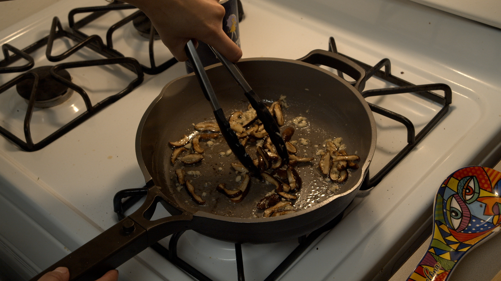

Guided Recipes / Sautéed Shiitake Mushrooms
Sautéed Shiitake Mushrooms
This method for cooking mushrooms leaves you with the most satisfying, flavor packed, slightly crispy mushrooms you have ever had. Be sure to start with a completely dry pan for the best results.

Interactive Video
Directions
Prep
- Gather your ingredients.
- Remove the stems from your mushrooms.
- Slice your mushrooms into 1/4 inch slices.
- Finely chop your garlic.
Cook
- Put a nonstick pan on high heat and allow it to get hot. Once it is hot, add your mushrooms to the dry pan.
- Stir and move the mushrooms semi frequently. You should hear them squeaking against the pan. Allow them to shrink down about 10% and the edges will turn golden brown.
- Once the edges are browned, add in your butter and garlic.
- Cook the mushrooms, butter and garlic until the garlic is golden brown.